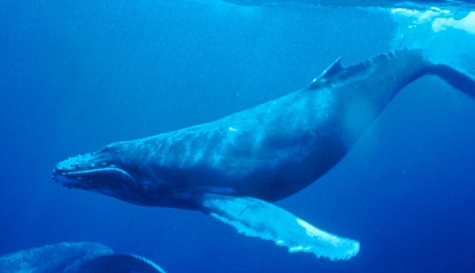

Whales are animals that live underwater and not fish. They make truly unique songs. These pages will tell you about different species of whales.Whales are fully aquatic, open-ocean creatures: they can feed, mate, give birth, suckle and raise their young at sea. Whales range in size from the 2.6 metres (8.5 ft) and 135 kilograms (298 lb) dwarf sperm whale to the 29.9 metres (98 ft) and 190 metric tons (210 short tons) blue whale, which is the largest known animal that has ever lived. The sperm whale is the largest toothed predator on Earth.